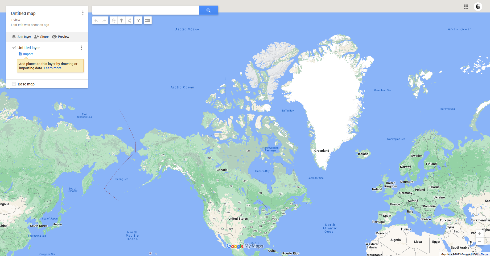
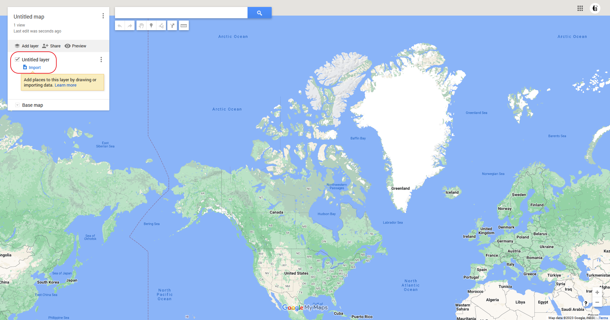
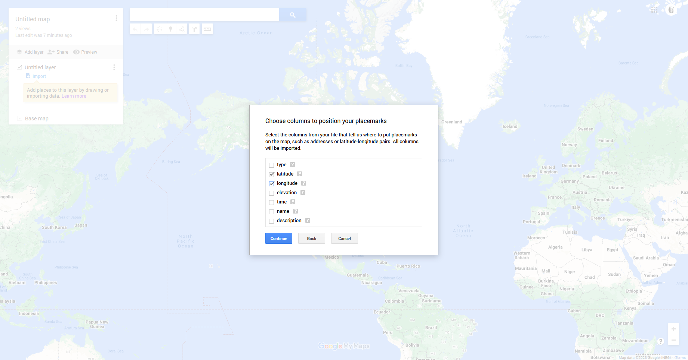
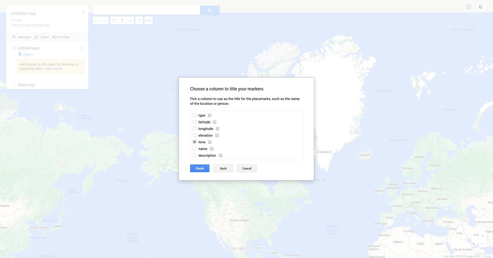
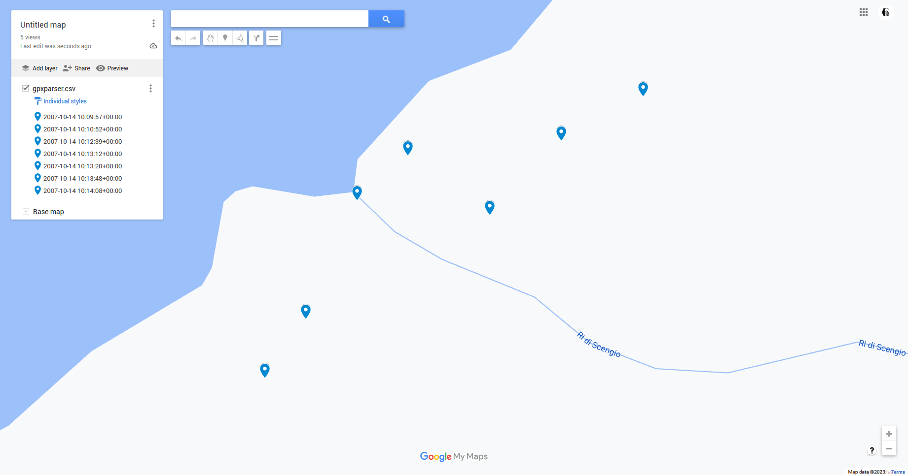

Tutorial#
In this tutorial, you’ll learn the basics of GPSUtils by working with a real-life example: interpreting data from a GPS device. Modern devices, such as activity trackers, often store GPS data in GPX files. By the end of this lesson, you should be able to parse GPX files, extract the useful information, and explore that data using GPSUtils and Google Maps.
Let’s get started!
Part 1: Parsing a GPX file#
Note
For more information on GPX files or to view the source of track.gpx, check out https://wiki.openstreetmap.org/wiki/GPX [2]
First, create a new GPX file called track.gpx. Inside that file, add the following contents:
<?xml version="1.0" encoding="UTF-8"?>
<gpx version="1.0">
<name>Example gpx</name>
<wpt lat="46.57638889" lon="8.89263889"><ele>2372</ele><name>LAGORETICO</name></wpt>
<trk><name>Example gpx</name><number>1</number><trkseg>
<trkpt lat="46.57608333" lon="8.89241667"><ele>2376</ele><time>2007-10-14T10:09:57Z</time></trkpt>
<trkpt lat="46.57619444" lon="8.89252778"><ele>2375</ele><time>2007-10-14T10:10:52Z</time></trkpt>
<trkpt lat="46.57641667" lon="8.89266667"><ele>2372</ele><time>2007-10-14T10:12:39Z</time></trkpt>
<trkpt lat="46.57650000" lon="8.89280556"><ele>2373</ele><time>2007-10-14T10:13:12Z</time></trkpt>
<trkpt lat="46.57638889" lon="8.89302778"><ele>2374</ele><time>2007-10-14T10:13:20Z</time></trkpt>
<trkpt lat="46.57652778" lon="8.89322222"><ele>2375</ele><time>2007-10-14T10:13:48Z</time></trkpt>
<trkpt lat="46.57661111" lon="8.89344444"><ele>2376</ele><time>2007-10-14T10:14:08Z</time></trkpt>
</trkseg></trk>
</gpx>
Note
In real life, this file will already be created for you by your GPS device.
In the same directory as track.gpx, create a new file called tutorial.py, which you will use for the remainder of this tutorial.
To parse track.gpx, open tutorial.py and place the following Python code within:
import gpsutils
# Open file for reading
gpxfile = open('track.gpx', 'r')
# Initialize our parser
gpxparser = gpsutils.GPXParser()
# Parse the file
gpxparser.parse(gpxfile)
Note
Note, GPX files may contain more than one track, so gpxparser.gpx.tracks is a list.
Part 2: Extracting useful information#
Note
To learn about specific tasks with tracks, take a look at the examples in Track.
All of the information we want and need (at least for the purposes of this tutorial) already live in gpxparser.gpx! But you may be asking yourself, “what can we do with this?” One option is to convert it into a more readable format, such as Comma Separated Values (CSV).
To convert our GPX object into a CSV file, insert this into tutorial.py:
gpxparser.gpx.to_csv()
Run tutorial.py by entering python3 tutorial.py in the commandline.
This produces a file named gpxparser.csv which contains:
type,latitude,longitude,elevation,time,name,description
W,46.57638889,8.89263889,0,2023-06-21 05:42:23.566970,LAGORETICO,
type,latitude,longitude,elevation,time,name,description
T,46.57608333,8.89241667,2376.0,2007-10-14 10:09:57+00:00,,
T,46.57619444,8.89252778,2375.0,2007-10-14 10:10:52+00:00,,
T,46.57641667,8.89266667,2372.0,2007-10-14 10:12:39+00:00,,
T,46.5765,8.89280556,2373.0,2007-10-14 10:13:12+00:00,,
T,46.57638889,8.89302778,2374.0,2007-10-14 10:13:20+00:00,,
T,46.57652778,8.89322222,2375.0,2007-10-14 10:13:48+00:00,,
T,46.57661111,8.89344444,2376.0,2007-10-14 10:14:08+00:00,,
To extract only the points belonging to a track, edit the to_csv() call like so:
# Before
gpxparser.gpx.to_csv()
# After
gpxparser.gpx.to_csv(include_waypoints=False, include_routes=False)
Which should alter gpxparser.csv (once you re-run the script) to contain only:
type,latitude,longitude,elevation,time,name,description
T,46.57608333,8.89241667,2376.0,2007-10-14 10:09:57+00:00,,
T,46.57619444,8.89252778,2375.0,2007-10-14 10:10:52+00:00,,
T,46.57641667,8.89266667,2372.0,2007-10-14 10:12:39+00:00,,
T,46.5765,8.89280556,2373.0,2007-10-14 10:13:12+00:00,,
T,46.57638889,8.89302778,2374.0,2007-10-14 10:13:20+00:00,,
T,46.57652778,8.89322222,2375.0,2007-10-14 10:13:48+00:00,,
T,46.57661111,8.89344444,2376.0,2007-10-14 10:14:08+00:00,,
Likewise, you can choose to extract only waypoints, tracks, or routes, or any combination of those using the include_* parameters.
For a complete list of parameters, please see GPX.to_csv.
Part 3: Exploring our data#
Let’s now put this data into an actual map. After all, maps will contextualize our data!
Head over to https://www.google.ca/maps/about/mymaps/, click “Get Started”, then “Create a New Map”.
Your screen should look something like this:
Select “Import” from the layer panel located on the left:
Then select gpxparser.csv.
Once the file has processed, you will be asked to identify which columns represent our point’s locations. Select “latitude” and “longitude”:
Then press “Continue”.
Next, choose which column will be used as each point’s title. Title choice will be based on preference, but here, “time” seems like a good option.
Now our points should be added to the map!
From here, you can use the line tool to connect each point (ie. re-tracing the track)
Part 4: Putting it together#
Once you’re done, tutorial.py should look like this:
import gpsutils
# Open file for reading
gpxfile = open('track.gpx', 'r')
# Initialize our parser
gpxparser = gpsutils.GPXParser()
# Parse the file
gpxparser.parse(gpxfile)
# Convert to CSV
gpxparser.gpx.to_csv(include_waypoints=False, include_routes=False)
That’s all!
Of course, this is only a taste of what you can do using GPSUtils.
Where to go from here?#
Take a look at the Guide
Check out the API Reference